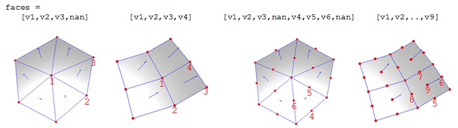

The particle class
A central element of the BEM approach is setting up the boundaries between objects with different dielectric functions. This is done through the class particle which defines the vertices and faces of the boundary elements in accordance to the Matlab Face-Vertex structure, as described in the Matlab patch help. In most cases, setting up the vertices and faces is automatically done in the routines provided by the MNPBEM toolbox.
Contents
Initialization
% initialization of PARTICLE object with vertices and faces
p = particle( verts, faces );
verts are the vertices of the discretized particle and faces the indices to these vertices which point to the edges of the triangles (quadrilaterals) of the discretized particle surface. Deatils about internal storage of vertices and faces is given below in the discussion of flat and curved boundary elements.
Upon initialization, particle objects have a number of additional properties
% area of particle boundaries p.area; % centroids of faces p.pos; % normal vectors of particle boundaries p.nvec;
Methods
The particle class provides a number of additional methods that are useful in setting up coupled or more complicated particle boundaries.
% shift particle by vector [ x, y, z ] p = shift( p, [ x, y, z ] ); % rotate particle around given axis DIR (z on default) by angle PHI (degrees) p = rot( p, angle, dir ); % flip particle at axis AX, eg. ax = 1 for x-axis p = flip( p, ax ); % scale particle by factor S p = scale( p, s ); % merge particles p1 and p2 into a single particle p = vertcat( p1, p2 ); % change face directions p = flipfaces( p ); % select specific boundary elements % - either by providing a function in Cartesian, polar, or spherical coordinates, % - or by providing an index p = select( p, 'carfun', @( x, y, z ) fun( x, y, z ) ); p = select( p, 'polfun', @( phi, r, z ) fun( phi, r, z ) ); p = select( p, 'index', ind );
Plot and coneplot
The particle class also provides flexible plot functions plot and coneplot.
% plot value array plot( p, val ); % plot particle edges plot( p, 'EdgeColor', 'b' ); % plot cone plot for vector array coneplot( pos, vec );
One can also call plot and coneplot repeatedly to display various particles. If the plotted value or vector array is multidimensional, the plot figure shows two green arrows that allow to page through the various dimensions. With the right mouse button one additionally gets a menu that allows to select between real and imaginary parts, and to set various plot parameters.
On some computer systems plot and coneplot may cause problems. In such cases one can use the functions plot2 and coneplot2 which have a more simple but probably more robust implementation. These functions should be also used in combinations with subplot or related functions for several plots in one figure.
Flat and curved boundary elements
The particle class has an additional interp property, which can be set to either 'flat' or 'curved', as well as a quad properry which controls particle boundary integrations. In general, we recommend to set these properties only in the initialization of compstruct objects.

- Flat triangular boundaries. For flat particle boundaries, a triangular boundary element is defined by a row in the face array with pointers to the three corner vertices. The vertices order must be given in counter clockwise order with respect to the outer surface normal. To store triangular and quadrilateral elements in one face structure, the last face entry must be a nan.
- Flat quadrilateral boundaries. Flat quadrilateral boundary elements are defined in the face array through pointers to the four indices given counter clockwise with respect to the outer surface normal.
- Curved boundary elements. By providing additional vertices at the edge midpoints, and for quadrilateral boundary elements also at the face center, with the order shown in the above figure, one can define curved boundary elements. To get curvature, these additional points should not lie in the plane defined by [v1,v2,v3,nan] or [v1,v2,v3,v4]. If these additional vertices are provided, face integration is performed by interpolating the integration points to the curved boundary by use of usual shape elements.
These auxiliary quantities, together with the vertices and faces, give the full information about the discretized particle surface needed for the BEM simulations. Note that for curved particle boundaries the following particle properties are set
verts, faces : triangular or quadrilateral face elements with
three and four vertices, respectively
verts2, faces2 : triangular or quadrilateral face elements with
six and nine vertices, respectivelyExamples
In the first example we show how to set up a nanosphere with triangular face elements, and to plot the centroids (black), the vertices at the boundary edges (red) and the vertices for the curved boundary (green).
% nanosphere p = trisphere( 144, 10 ); % plot particle plot( p, 'EdgeColor', 'b' ); hold on; % plot centroids in black plot3( p.pos( :, 1 ), p.pos( :, 2 ), p.pos( :, 3 ), 'k.' ); % plot vertices at edges plot3( p.verts( :, 1 ), p.verts( :, 2), p.verts( :, 3 ), 'rs' ); % plot vertices for curved boundary element integration plot3( p.verts2( :, 1 ), p.verts2( :, 2 ), p.verts2( :, 3 ), 'g.' );
In the next example we show how to set up a sphere with quadrilateral boundary elements, to select the upper and lower halves, and to displace them.
% nanosphere with quadrilateral elements p = trispheresegment( linspace( 0, 2 * pi, 21 ), linspace( 0, pi, 21 ), 10 ); % select upper and lower halves (the function is defined for the centroids) [ p1, p2 ] = select( p, 'carfun', @( x, y, z ) z > 0 ); % displace upper half p1 = shift( p1, [ 11, 0, 0 ] ); % plot particles plot( vertcat( p1, p2 ), 'EdgeColor', 'b' );
We finally show how to plot the area of the particle boundaries together with the outer surface normals
% nanosphere p = trisphere( 144, 10 ); % plot particle area and outer surface normals plot( p, p.area, 'nvec', 1 ); hold on;
Copyright 2017 Ulrich Hohenester